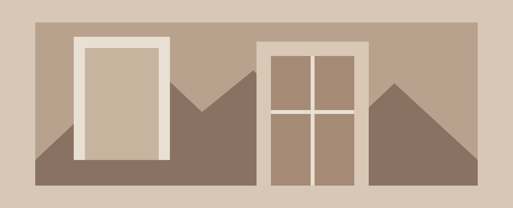

Permanente vorming
Blijven ontdekken.
Naast mijn opleiding vind ik het belangrijk om nieuwe ervaringen op te doen, mijn interesses te verkennen en mezelf zowel persoonlijk als professioneel te blijven ontwikkelen. Hieronder vind je een overzicht van mijn activiteiten. Klik op een tegel om later meer te lezen over de ervaring.